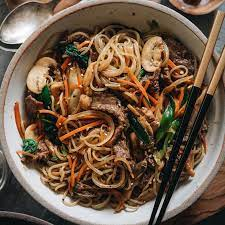

Homepage
Japchae

This is one of my favorite Korean recipes.
It's authentic, healthy, and absolutely delicious.
Ingredients
Sauce:
- 3 tablespoons of soy sauce
- 2 1/2 tablespoons white sugar
- 2 tablespoons of sesame oil
- 2 teaspoons minced garlic
Stir Fry Ingredients
- 8 ounces of sweet potato noodles
- 4 ounces of leans beef, cut into 2-inch long strips
- 6 ounces of fresh spinach
- salt and ground black pepper to taste
- 1 tablespoon of vegetable oil, divided
- 4 mushrooms, stemmed and sliced
- 1 small carrot, cut into matchsticks
Directions:
- Whisk soy sauce, sugar, sesame oil, and
garlic in a bowl until sugar is dissolved into sauce.
- Bring a large pot of lightly salted water to a boil.
Cook sweet potato noodles in the boiling water, stirring
occasionally until cooked through but firm to the bite,
6 to 7 minutes. Rinse noodles under cold water and drain.
Transfer noodles to a bowl, add 2 tablespoons sauce, and
toss to coat.
- Squeeze beef under running water until juices run clear.
Mix beef and 1 tablespoon sauce together in a bowl.
- Bring a pot of water to a boil. Cook spinach in the
boiling water until just wilted, about 1 minute. Drain
quickly and transfer spinach to a bowl of cold water to
stop the cooking process. Squeeze excess water from spinach,
place spinach in a large bowl, and season with salt and pepper.
- Heat 1 teaspoon oil in a large skillet over medium-high
heat; cook onion until fragrant but crisp, 1 to 2 minutes.
Transfer onion to the bowl with spinach. Heat another 1
teaspoon oil in the same skillet. Cook mushrooms in the hot
oil until lightly browned but still firm, 1 to 2 minutes;
add to onion mixture. Heat remaining 1 teaspoon oil in the
same skillet. Cook carrot in the hot oil until lightly
browned but still crisp, 1 to 2 minutes; add to onion mixture.
- Cook and stir beef in the same skillet until browned, 1 to
2 minutes; add to onion mixture. Cook and stir noodles in
the same skillet until heated through, 1 to 2 minutes; add
to beef-onion mixture. Add remaining sauce to beef-noodles
mixture and toss to coat using your hands.